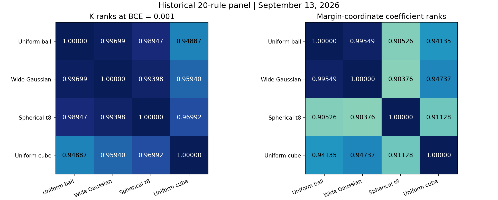
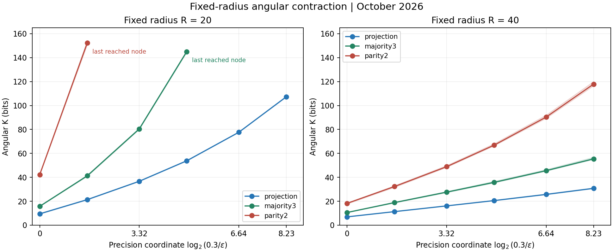

October 2026 update: The original report is retained; jump to the added experiments, checks, and limitations.
Date: 2026-09-21
This report closes a necessary gap: is Neural K “volume” Euclidean volume, Gaussian probability, or another reference measure? If changing the measure made the conclusion disappear, the volume picture could merely be an artifact of initialization density. If absolute values change while the complexity direction remains, measure dependence and simplicity bias are distinct layers.
1. Separate the Questions First
On an unbounded parameter space, ordinary Lebesgue volume is usually infinite and cannot be compared directly. A normalized reference measure must be chosen:
- Gaussian measure: compatible with random initialization and pCN-style SMC proposals; parameter mass decays away from the center;
- Uniform Lebesgue measure inside a fixed-norm ball: uniform on $\lVert\theta\rVert_2\le R$, removing direct Gaussian density weighting while introducing a ball boundary;
- Shifts of the output reference center or target amplitude: these need not change the parameter measure, but they move and reshape the joint-output event under that measure.
Therefore one should not require identical absolute K values after changing the measure. The relevant comparisons are:
- whether simple/complex rule ordering is preserved;
- separately, how relative mass responds when loss is tightened at fixed targets and when target spacing changes at fixed MSE;
- whether the measure changes only a common translation term or changes rule-dependent response coefficients.
2. Correction to the Gaussian Endpoint Experiment
An early endpoint experiment moved the output endpoints from $(-9,+9)$ to $(-10,+10)$ or $(-9,+11)$ under a Gaussian parameter measure and observed large K increases. Those increases included the prior-density penalty for moving the target away from the Gaussian center; they cannot be read directly as the amount by which a Euclidean parameter region shrank.
The early Gaussian endpoint experiment is therefore no longer used as Euclidean-volume evidence. It remains a valid Gaussian-reference experiment, but it answers a different question: under the Gaussian initialization language, what probability cost is paid when the joint-output event is moved away from the prior center?
3. Euclidean Recheck inside a Fixed-Norm Ball
The recheck fixed
3 -> 16 -> 1 tanh
R = 72, uniform Lebesgue measure inside the ball
rules: constant 0x00, copy 0x0F, majority 0x17, parity 0x69
4 independent SMC replicas, 2,048 particles per replica
common node: MSE = 0.01
Here (l,h) are the two class target values for MSE, not the boundaries of an output box. At a fixed threshold, the measured event is
Moving the target values generally does not produce nested events, so mass ratios between different targets are not conditional survival probabilities under "added constraints." The corresponding nesting holds only when the targets are fixed and the MSE threshold is tightened.
The common-node results were:
| Rule | (-9,+9) | (-10,+10) | (-9,+11) |
|---|---|---|---|
| Constant 0x00 | 32.59 | 32.84 | 32.66 |
| Copy 0x0F | 46.19 | 47.96 | 47.78 |
| Majority 0x17 | 58.65 | 61.25 | 61.18 |
| Parity 0x69 | 77.51 | 83.03 | 82.86 |
The increments relative to $(-9,+9)$ were:
| Rule | Symmetric increase in target spacing | Raising only the positive-class target |
|---|---|---|
| Constant | +0.25 bit | +0.07 bit |
| Copy | +1.77 bit | +1.59 bit |
| Majority | +2.60 bit | +2.54 bit |
| Parity | +5.51 bit | +5.34 bit |
The key fact is that after removing Gaussian positional weighting, complex rules were still more sensitive to increased target spacing in this window, and the basic ordering remained constant < copy < majority < parity. Thus this non-Gaussian ordering and response need not rely on a pointwise Gaussian density factor; however, a mass decrease between different target events is not nested contraction of the same feasible set.
This is not a strict Euclidean volume law. The difference between symmetric target movement and raising only the positive-class target was only about 0.06–0.18 bit, close to replica uncertainty, and the fixed ball introduces boundary effects. The more accurate description is a finite-window response:
where the response coefficients are determined by the rule's joint-output constraint geometry, rather than being universal constants of the Gaussian measure.
4. Endpoint Interaction and Finite-Window Additivity
Define the four-point interaction term:
If $\Gamma$ is close to zero, the K increments from moving the two target values separately are approximately additive in the current window; this is not a cost decomposition for adding nested constraints.
In the fixed-ball $R=72$ deep-tail grid, the maximum $|\Gamma|$ over eight computable rectangles at MSE 0.01, 0.003, and 0.001 was 0.919, 0.868, and 0.931 bit, respectively. None exceeded the conservative replica-variation proxy. Repeating a four-point check at $R=96$ and MSE=0.001, with the sign convention unified to the definition above, gave Gamma values of -0.464, +1.304, +0.458, and +0.011 bit for constant, copy, majority, and parity; these also did not exceed the corresponding replica SD sums. Unifying the sign does not change the absolute-value verdict; the SD sum is only a diagnostic proxy, not a confidence interval.
Together with the current center controls and local second-difference diagnostics, the evidence is compatible with a finite-window approximation along the measured paths:
Here $d=h-l$, with MSE and ball radius fixed; K is in bits and $\lambda_f$ is in bits per unit of target spacing. The experiment measured that Gamma is compatible with zero; it did not measure a genuinely nonzero Gamma with high precision. Small Gamma alone also cannot establish an exact law depending only on spacing.
5. Output Center, Amplitude, and Bias Controls
The same 3 -> 16 -> 1 tanh network also compared several interventions in the Gaussian reference language:
- shifting the target and output reference center together from 0 to 10: the four rule curves nearly overlapped point by point, with rank correlation 1;
- shifting only the target while leaving the reference measure fixed: K increased by about 124.5–154.1 bit, showing that the cost comes from measure misalignment rather than the coordinate translation itself;
- removing the final output bias: rank correlation remained 1, and hidden-layer biases compensated for most of the global translation path;
- scanning the target half-spacing $a\in\{0.01,0.1,0.5,1,3\}$: the four rule orderings stayed unchanged, but at $a=0.01$ the K differences between rules nearly collapsed; amplitude mainly changes separability and the strength of contraction in the middle and early parts of the curve.
These results show that the joint output distribution must record both the overall position of the distribution and the separation between functions. The absolute value of one loss curve cannot identify whether a change comes from rule geometry, output encoding, or reference-measure location.
6. Why Gaussian Measure Can Still Align with Real Training
These experiments do not support the claim that real training equals a Gaussian conditional distribution. They suggest a weaker and more plausible chain:
- Training starts from Gaussian initialization. With finite optimization time, the initialization region, reachable paths, and local basins can retain an effect on endpoints. Gaussian is part of the training protocol, not an arbitrary measure chosen after seeing the result.
- The parameter-to-function map can preserve a shared structural ordering. Different measures change absolute mass, but if simple rules correspond to larger feasible joint-output regions and complex rules impose more competing constraints, several smooth, non-pathological measures can retain approximately the same ordering.
- SGD can correlate with Gaussian mass without being equal to it. If local curvature, basin multiplicity, path length, and initialization basins correlate with Gaussian mass, the training distribution and static Gaussian mass can point in the same direction. This is a dynamical correlation with the reference measure, not a theorem that training samples from equilibrium.
- The measure-robustness checks weaken the “Gaussian coincidence” explanation. The uniform-ball experiment retained complexity-dependent endpoint responses and the same basic rule ordering, showing that the core phenomenon is not created entirely by the Gaussian center.
The most defensible statement is therefore:
Gaussian measure is a reference measure compatible with initialization and the SMC protocol, and it predicts the observed direction well. Real training need not match it numerically; it only needs to remain sufficiently correlated in complexity ordering and in the direction induced by tightening the loss. The uniform-Euclidean recheck supports this “ordering is more robust than absolute mass” interpretation, but does not show that every measure or every optimizer has the same property.
7. Remaining Boundaries
- Only 3-bit inputs, one small network, and four representative rules were measured; this does not establish the result for the full 4-bit space or large models;
- A fixed-radius ball introduces boundary effects, and uniform Euclidean measure is not unbounded Lebesgue volume;
- The experiments do not prove that SGD endpoints are uniquely determined by Gaussian static mass;
- No reference measure fully independent of Gaussian initialization, SGD, and the network parameterization has been established as a “natural measure”;
- The larger response of complex rules is a stable empirical observation here, but its analytic origin still requires a joint-output geometry or architecture-kernel explanation.
8. Reproducible Materials
ENDPOINT_RESULTS_EUCLIDEAN.md: fixed-ball recheck;ENDPOINT_GRID_RECHECK.md: high-budget endpoint interaction check;DEEP_TAIL_RESULTS.md: R=72/R=96 deep-tail Gamma checks;RESULTS.md: translation, output-bias, and amplitude scans;run_endpoint_uniform_ball.py,run_output_box_experiments.py,experiment_3bit_cross_architecture_complexity_order.py: self-contained rerunnable scripts;summary.json,grid_analysis.json: lightweight machine-readable summaries.
2026-10-27 Supplement: Contraction Across Measures and a Fixed-Radius Angular Control
This supplement adds evidence after the existing E37 text without replacing it or creating a new experiment number. It distinguishes the historical 20-rule natural-measure panel of 2026-09-13 from the 24 fixed-radius sphere pools that had all reached terminal states by 2026-10-25. Work on 2026-10-27 was limited to preparing public materials, recomputing lightweight tables, and checking code; no new training or SMC sampling was performed.
1. Motivation and Scope of the Conclusions
The "volume" in Neural K is event mass under an explicitly specified reference measure. Gaussian is a convenient reference choice, but a necessary question is whether mass contraction and rule ordering as loss tightens are entirely caused by Gaussian radial-tail penalties. This supplement examines shared phenomena and major orderings across measures, without requiring equal absolute K values.
The representative controls in the original E37 used 3 -> 16 -> 1 tanh, a uniform measure inside a ball, and moving MSE targets; this supplement uses 4 -> 16 -> 1 tanh and tightening BCE thresholds on a complete truth table. A uniform ball measure differs from a fixed-radius sphere measure, and moving MSE targets differs from tightening BCE events around a fixed target. These curves or response coefficients cannot be combined directly into a single law.
The supported conclusion is that, within the tested reference measures, architecture, rule panels, and finite loss windows, low-loss contraction, rule-dependent contraction differences, and relatively stable major complexity orderings are not unique to Gaussian measures. The fixed-radius results further show rule-dependent angular contraction after removing a radial-tail mechanism that changes with loss.
"Normal measures" is not a mathematical class that has been defined here and proved to exhibit universality. A shared trend does not imply the same formula, coefficient, local ordering, or infinitely deep-tail asymptotics for all measures; nor does it imply that actual training is conditional sampling from a static measure.
2. Timeline, Protocol, and Registration Status
This document organizes the motivation, protocol, and conclusions after completed results were available. It is not a formal preregistration, and its date cannot substitute for prospective registration. The historical natural-measure panel preserves the rules selected before sampling the new measures at that time. The fixed-radius configuration preserves the corrected core and the condition selection actually scheduled, but this supplement does not claim that it or all analysis windows were preregistered on an independent registry.
| Date | Material and scope | Status in this supplement |
|---|---|---|
| 2026-09-13 | 20 rules, wide Gaussian / spherical t8 / uniform cube, totaling 60 measure-rule jobs | Historical background, not new October sampling |
| 2026-10-24 | Repair of the deterministic CUDA kthvalue failure while preserving scientific computation parameters |
Implementation repair, not a scientific result |
| 2026-10-25 | R20 / R40, projection / majority3 / parity2, all 24 pools terminal | New fixed-radius evidence: 16 pools reached all nodes; 8 stalled |
| 2026-10-27 | Frozen sources moved into the public directory, lightweight table recomputation, CPU checks, and bilingual preparation | Public supplement, no new sampling |
The failure of the original 96 pools at deterministic CUDA kthvalue was an implementation error, not scientific evidence of low mass, infeasibility, or failure of the measure hypothesis. The corrected entry point uses the separate protocol fixed_radius_angular_smc_independent_pilot_v2_cpu_kthvalue and rejects checkpoints from the old protocol. The 24 pools in this supplement are not the original 96 failures relabeled as successes.
3. Measurement Target and Two Precision Coordinates
Inputs comprise all 16 binary 0/1 vectors ordered from 0000 to 1111, with fixed labels. The network has 97 standardized parameter coordinates; actual weights and biases are both scaled by 1/sqrt(fan_in) for their layer. The 80 first-layer coordinates are multiplied by 1/2, and the 17 output-layer coordinates by 1/4. Spherical symmetry, radius, and second moments are defined in these standardized coordinates; the same Euclidean rotational invariance is not asserted in actual-weight coordinates.
Writing the output logit as g_theta(x_i) and the label as y_i, mean BCE, event mass, and Neural K are defined as:
The fixed-radius control sets theta = R U, where U is uniform on the unit sphere. Normalizing a standard Gaussian vector is only a method for generating a uniform direction; it does not introduce Gaussian radial weighting that changes with loss. The target is normalized sphere mass, not Lebesgue volume inside a ball:
Independent pools are combined by taking an arithmetic mean in probability space and then a negative logarithm. For m complete pools, the aggregate is given below. One must neither average K directly nor discard unreached pools and average only successful ones:
The historical natural-measure panel uses a margin-style coordinate for its coefficient, measured in bits per margin-coordinate unit over 0.01 -> 0.001:
The new sphere control reports a finite-window coefficient in the log2 precision-ratio coordinate, measured in bits per log2 precision unit over 0.03 -> 0.001:
These coefficients must not be compared as if they were interchangeable. The frozen sphere core's auxiliary field finite_window_dK_da_from_previous still uses the margin coordinate. The tables in this supplement and analyze_published.py explicitly recompute the log2 precision ratio without modifying or reinterpreting that historical field. A finite-window coefficient is not a proven universal power-law exponent.
4. Historical 20-Rule Natural-Measure Background
All results in this section come from the existing data of 2026-09-13. The panel combines the 4 anchors from an earlier 36-rule set, the original first sample in each of 12 strata, and four near-tie or reversal cases: 0x01EF, 0x2ABE, 0x2FF4, and 0x09A0. Selection did not use the new-measure results. Each measure-rule job used 8 replicas with 2048 particles each and 24 updates per level, in float32 without TF32 / AMP. All 60 jobs for the three measures introduced at that time reached BCE 0.001.
The reference is a uniform ball of radius 72 in 97-dimensional standardized coordinates. The wide Gaussian, spherical multivariate Student-t8, and uniform cube match its mean squared norm:
The entire t8 vector shares one G; independent coordinatewise t distributions are not a substitute. Wide Gaussian and t8 have no hard radius bound: R72 is only a second-moment scale. The cube preserves coordinate permutations and sign flips, but not arbitrary rotations. The historical unit Gaussian has a different scale and is not part of this second-moment-matched group. The initially planned independent Laplace distribution was replaced with spherical t8 before the formal new-measure scan; no Laplace rule scan was run.
All K rankings below use BCE 0.001, and all coefficient rankings use the historical coordinate c_a defined in this supplement. The comparison reference is the scale-matched uniform ball:
| Measure | K-rank Spearman | Coefficient-rank Spearman | Concordant K pairs | Concordant coefficient pairs |
|---|---|---|---|---|
| Wide Gaussian | 0.99699 | 0.99549 | 188/190 | 188/190 |
| Spherical t8 | 0.98947 | 0.90526 | 184/190 | 168/190 |
| Uniform cube | 0.94887 | 0.94135 | 173/190 | 172/190 |
The major orderings for wide Gaussian and the uniform ball are very close. t8 retains a similar K ordering, but its late-window curves flatten and its coefficients become closer together. The cube has more local reversals, but it changes both directional structure and the radial distribution; the causal contribution of reversals cannot be attributed entirely to directional bias. The 190 pairs are not independent experiments and do not represent a population probability over all 65536 functions.
Among reversed point estimates relative to the uniform ball, neither wide Gaussian nor t8 has a pair whose replica ranges are separated under both measures. For the cube, 8 K pairs and 4 coefficient pairs meet that diagnostic. Replica ranges are not formal confidence intervals, overlapping ranges do not prove identical ordering, and not every local reversal was retested with an independent update kernel in this round.
| Rule | Uniform ball c_a |
Wide Gaussian c_a |
Spherical t8 c_a |
Uniform cube c_a |
|---|---|---|---|---|
| Constant | 0.600 | 0.598 | 0.609 | 0.628 |
| copy / complement | 1.962 | 1.907 | 1.435 | 2.668 |
| parity2 | 5.716 | 5.046 | 1.975 | 6.948 |
| parity4 | 12.488 | 8.828 | 2.163 | 9.938 |
Similar average coefficients for parity2 and parity4 under t8 do not imply equal mass. At BCE 0.001, their K values are approximately 33.119 and 46.702, still differing by approximately 13.58 bits. Across this window, their adjacent-node margin-coordinate slopes decrease from approximately 2.248 to 1.753 and from approximately 2.520 to 1.857, respectively. These cannot be described as the same stable straight lines as for the uniform ball.
Under each of the three measures introduced at that time, all 19 tested nonconstant rules contracted faster than the constant over 0.01 -> 0.001. This is a comparison against the constant within this panel and is the same evidence represented by the coefficients, not proof that every rule pair preserves its order or that bias keeps strengthening in an infinitely deep tail.

Figure: the historical 20-rule panel of 2026-09-13. Left: K-rank correlations at BCE 0.001; right: margin-coordinate coefficient-rank correlations over 0.01 -> 0.001. Chinese and English share this English-axis figure. These data are not new October sampling.
5. New Fixed-Radius Protocol
The fixed-radius control uses the same 4 -> 16 -> 1 tanh network, standardized coordinates, and complete truth table. With encoding in truth-table row order, projection is 0xFF00, majority3 is 0xFCC0, and parity2 is 0x0FF0: copying the first bit, majority of the first three bits, and XOR of the first two bits, respectively. Radii are 20 and 40, with 4 independent pools per condition, totaling 24 pools.
| Configuration item | Fixed value |
|---|---|
| Architecture / dimension | [16] / 97 |
| Evaluation particles / independent pilot particles | 1024 / 256 per pool |
| dtype / TF32 / AMP | float64 / off / off |
| Deterministic algorithms | torch.use_deterministic_algorithms(True) |
| BCE nodes | [2.0, 1.0, 0.7, 0.3, 0.1, 0.03, 0.01, 0.003, 0.001] |
| Pilot target survival fraction | 0.5 |
| Update steps per level | 56 |
| Fixed-cycle eta multipliers | [1.0, 0.3, 0.1, 0.03, 0.01, 0.003, 0.001] / sqrt(97) |
| Micro-batch / audited parameter vectors per node | 2048 / 16 |
| Base seed | 2026102301; each pool derives its seed from a fixed hash of condition identity |
| Level budget / consecutive stalled-level budget per pool | 2048 / 32 |
| Minimum relative progress | 1e-10 |
| Cumulative budget per pool / global budget per invocation | 1800 / 14400 seconds, checked at complete level boundaries |
The proposal normalizes u + eta Z and preserves the sphere radius. Its transition density depends only on the directional inner product, making it reversible with respect to the uniform sphere; BCE rejection then enforces the constraint. Eta follows a fixed cycle and is not tuned online using evaluation particles. An independent pilot selects intermediate thresholds, while evaluation particles accumulate actual survival fractions. Neither kernel reversibility nor radius preservation implies sufficient mixing in a nonconvex conditional distribution.
The repair only changes threshold selection to torch.kthvalue(pilot_losses.detach().cpu(), order).values, preserving the input dtype, k, random streams, and deterministic settings. The frozen core still defaults to a larger condition panel. The public entry point selects the conditions reported here through the 24-pool configuration, without changing the sampler's scientific parameters. Source provenance and hashes are in the source manifest.
Global-budget stops or interruptions can resume at complete level boundaries; scientifically unreached pools that are already terminal are not retried automatically. stalled_levels_budget, level_budget, replica_time_budget, analytic_loss_lower_bound, and zero_evaluation_survivors remain unreached, not estimates of true zero mass. internal_error and numerical-audit failures are reported separately as errors. Changes to scientific configuration, source code, or environment require a new result directory rather than continuation of incompatible historical checkpoints.
6. Fixed-Radius Results
At R40, all 4 pools for each of the three rules reached BCE 0.001. The table uses probability-pooled K over 0.03 -> 0.001:
| Rule | K(0.03) / bits | K(0.001) / bits | ΔK / bits | c_log2 = ΔK/log2(30) |
|---|---|---|---|---|
| projection | 16.12 | 30.78 | 14.66 | 2.99 |
| majority3 | 27.63 | 55.44 | 27.81 | 5.67 |
| parity2 | 48.88 | 117.92 | 69.04 | 14.07 |
At the deepest node, the four-pool K ranges are 30.60 to 31.28, 55.00 to 56.79, and 116.55 to 120.20 bits, respectively. These between-pool differences do not alter the major separation of the three curves, but the ranges are not confidence intervals. Radius remains fixed throughout loss tightening, so the decline in mass cannot be explained by moving into a more distant Gaussian radial tail. Contraction of the directional region satisfying the joint-output constraints must also be considered.
The upper endpoint 0.03 is already below ln(2)/16 ≈ 0.0433. Under unweighted mean BCE over the complete truth table, a single wrong-sign sample or zero logit contributes at least ln(2), so this window forces correct signs at all 16 points. This avoids treating potentially overlapping full-target events at high loss as mutually exclusive hard function cells.
| Radius | Rule | Pools reaching all nodes | Deepest reached scheduled node | Terminal state |
|---|---|---|---|---|
| 20 | projection | 4/4 | 0.001 | Completed |
| 20 | majority3 | 0/4 | 0.01 | 4 stalled pools |
| 20 | parity2 | 0/4 | 0.1 | 4 stalled pools |
| 40 | projection | 4/4 | 0.001 | Completed |
| 40 | majority3 | 4/4 | 0.001 | Completed |
| 40 | parity2 | 4/4 | 0.001 | Completed |
All 24 pools are terminal: 16 reached every node, while 8 reached stalled_levels_budget. completed_with_failures only means that scheduling ended with unreached pools retained, not that all scientific objectives were achieved. At R20, the final support threshold for majority3 was approximately 0.00395, and those for parity2 ranged from 0.0708 to 0.0734. These are neither reached scheduled nodes nor proven global minimum losses.
For projection at R20 over 0.03 -> 0.001, K rises from 36.70 to 107.32 bits, giving ΔK = 70.61 bits; at R40, the same rule has ΔK of only 14.66 bits. Changing radius therefore does not always change only a loss-independent intercept. No full-window coefficient is available for majority3 or parity2 at R20. Unreached nodes are not filled with zeros, interpolated, or extrapolated.

Figure: curves show probability-pooled K; shaded bands span the minimum to maximum K across four pools and are not confidence intervals. The horizontal coordinate is log2(0.3/epsilon), showing only reached nodes with epsilon <= 0.3. The main text's window 0.03 -> 0.001 still has horizontal length log2(30). The two incomplete R20 curves end at their last reached scheduled node; stalled support thresholds are not presented as complete node estimates. Chinese and English share this English-axis figure.
7. Verification Strength and Unresolved Issues
The historical independent audit of 2026-10-25 read 200 records containing 3200 parameter vectors from 24 audit files, recomputed 51200 outputs with NumPy float64, and checked scaling, radius, labels, BCE, predicted signs, and constraint feasibility. The maximum logit discrepancy was 7.11e-15, the maximum BCE discrepancy was 4.44e-16, and the maximum relative radius error was 4.44e-16, with no audit warnings. This supplement preserves that historical audit summary; it does not describe these as results obtained by rereading the original parameters on 2026-10-27.
These checks are stronger than inspecting final tables alone, but they do not prove sufficient mixing. The historical measure export lacked per-level survival logs, preventing independent reconstruction of the complete volume ledger. This lightweight public package also omits the original audited parameter arrays, full particle sets, and large checkpoints. The public scripts can therefore check tables, coordinates, terminal states, and orderings, or rerun the protocol from the prior, but the supplied summaries alone cannot reproduce every historical parameter audit or guarantee bitwise reproduction across hardware.
Unreached R20 conditions may reflect fixed-radius limits on margin, finite proposals, mixing difficulties, or local exploration; the current results do not fully separate these causes. An unreached node proves neither zero volume nor infeasibility. Agreement between independent pools, acceptance rates, short refreshes, and numerical audits cannot individually rule out shared mixing bias.
For a spherically symmetric reference measure, mass can formally be decomposed into an integral of angular mass against the full radial density, which must include the Jacobian. Only two spheres were measured here; this continuous integral was not performed, and sparse radius points were not used to fit an unknown deep tail:
The most defensible conclusion is therefore: Several tested reference measures share some contraction phenomena and robustness of major orderings; specific mass, local ordering, contraction shape, and rate still depend on the measure. Fixed-radius evidence rules out an explanation in which all phenomena arise solely from Gaussian radial tails, but it does not establish a theorem that all normal measures share the same formula, coefficients, or infinitely deep-tail law.
8. Public Reproduction Entry Points and Dependencies
All required execution sources are in fixed_radius_20261027/. The sphere core and the three required historical natural-measure sources were copied byte for byte; the original E37 README and frozen sources were not overwritten. The historical 20-rule panel, source panel, scientific configuration, and lightweight ranking tables are also included. Only machine-local paths unrelated to execution were cleaned up, with provenance recorded. No temporary script outside the framework or machine-local result ZIP is required.
Execution requires Python, NumPy, and PyTorch; redrawing figures additionally requires Matplotlib. requirements.txt records NumPy 2.4.1, PyTorch 2.11.0, and Matplotlib 3.10.9 from the lightweight verification environment. The actual checks used Python 3.13.5 and PyTorch 2.11.0+cu130, with CPU computations only. This is not a complete lockfile for the original cloud environment. A full rerun requires a device-compatible CUDA build of PyTorch and an environment check; there is no automatic fallback to a long CPU experiment.
Run the following commands from fixed_radius_20261027/. Both execution entry points set RUN_SAMPLING = False at the top. By default, they only import modules, verify provenance, and display configuration; they create no sampling results. The analysis command consumes only the supplied lightweight data. When copying an entry point into a Notebook, retain the complete reproduction directory and point the top-level BUNDLE_DIR to it (default .). The entry point ignores Notebook kernel command-line arguments and requires no command-line options; it is not a single-file package embedding all dependencies:
python -E -s -B run_fixed_radius.py
python -E -s -B run_natural_measures.py
python -E -s -B validate_lightweight.py
python -E -s -B analyze_published.py --figures --write-summary
python -E -s -B check_publication.py
Explicitly setting the top-level RUN_SAMPLING to True enables sampling without command-line arguments. The --run command-line option remains available, while --check forces check-only mode. Top-level DEVICE, OUTPUT_DIR, and either RUN_HOURS in the sphere entry point or MAX_SECONDS in the historical-panel entry point configure the device, output, and budget; explicit command-line options take precedence. The following commands are for later reproduction and were not executed in this update; first confirm that the selected GPU is free. The sphere entry point defaults to cuda:0, and outputs are restricted to subdirectories of this supplement's runs/ directory. Reusing a path resumes only compatible nonterminal states:
python -E -s -B run_fixed_radius.py --run --device cuda:0 --hours 4 --output runs/fixed_radius
python -E -s -B run_natural_measures.py --run --device cuda:0 --max-seconds 120 --output runs/natural_measures
The historical natural-measure entry point reuses the frozen sampler, seeds, and all 60 measure-rule jobs. --max-seconds 120 is its original per-job invocation budget, and unfinished states can be advanced by calling it again. It does not calculate the new fixed-radius results or read the old machine-local data directory. The frozen sources retain their historical defaults; use the public entry points rather than directly executing the frozen files' main programs.
Public files include the sphere entry point, historical-panel entry point, lightweight analysis and plotting, independent CPU tests, per-node curves, 24-pool terminal states, historical rule table, and recomputed summary.
9. Checks Performed and Remaining Work
Lightweight verification on 2026-10-27 actually completed py_compile for 11 Python files; import checks for NumPy / PyTorch / Matplotlib and all required frozen modules; hash verification of 15 source files; and 11 pure-CPU unit tests. All passed. Tests cover every order statistic for the deterministic quantile, unchanged dtype and random streams, detach/cpu before kthvalue, independent NumPy forward computation, radius preservation, probability pooling, retention of unreached nodes, failure classification, the two precision coordinates, panel identity, and nonsampling default entry points. Details are in VALIDATION.json.
The Windows virtual-environment executable initially could not import PyTorch because _ctypes failed to load a DLL. Checks were completed with the base interpreter loading libraries from the same installed environment, without modifying the installation or invoking an execution script outside the framework. This environment issue is distinct from the historical CUDA kthvalue failure and is not a scientific failure. No GPU acceptance check, training, new SMC, or deep-tail mixing validation was performed in this update.
Further work requiring separate authorization includes public archiving of complete parameter-audit data and per-level survival logs, stronger checks with independent kernels and larger budgets, separating the causes of unreached R20 conditions, continuous radial integration across more radii, and external validation on broader rule and measure panels. The integration workflow is responsible for the top-of-page jump link, concatenating the old text with this supplement, and the site build. This supplement does not modify the build, main text, ledger, theory, or other experiments.